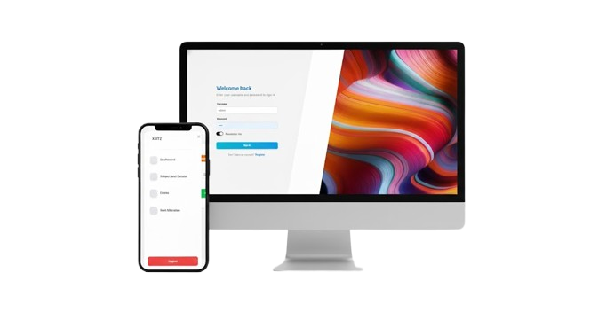

Exam Seating Arrangement System
Abstract : Exam Seating Arrangement with Navigation System is a smart solution designed to simplify and automate the process of allocating exam halls and guiding students to their assigned seats. The system eliminates the manual effort involved in planning, managing, and locating exam seats by providing a unified platform accessible via both web and mobile interfaces.
Using Technology
FrontEnd : HTML, CSS, JavaScript BackEnd : Python, Django Database : Psql Mobile App : FlutterFeatures
- Admin (Web Module): The admin manages the entire examination process through a web-based portal. This includes adding exam schedules, uploading student data, assigning rooms and seats, and generating seating charts automatically. The admin can also monitor teacher duties and room allocations in real-time.
- Teacher (Mobile App): Teachers can view their assigned invigilation rooms, student seating details, and attendance records using the mobile application. They can report any discrepancies or updates directly through the app, ensuring smooth coordination during examinations.
- Student (Mobile App): Students can log in to the app to view their personalized exam schedule, assigned hall, and seat number. The app provides easy access to location details, ensuring transparency and reducing confusion on exam days.
- Navigation (Mobile App): The navigation module helps students and teachers locate their respective exam halls using an in-app navigation system or map. This feature is especially useful in large campuses or multi-building institutions, allowing users to find their rooms easily and on time.
